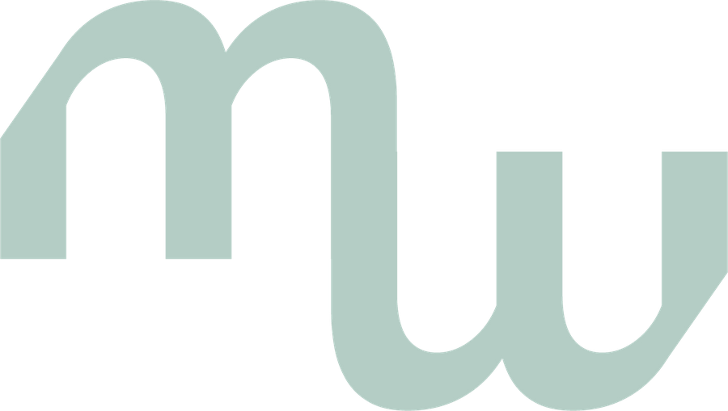

Contacte
Som a la primera planta del número 2 del carrer de la Muralla, a Mollerussa.
Parla amb nosaltres
- Telèfon i WhatsApp: 973 71 16 41
- Centraleta (et podem trucar des d'aquest número): 873 40 69 73
- Instagram: @jmmetges_mollerussa
Responem els WhatsApp de 15 a 20 h.
Horari
- De dilluns a divendres: 8–20 h
- Sempre amb cita prèvia
- Dissabte i diumenge: tancat
Abans ens coneixíeu com a JM Metges. Després de prop de trenta anys cuidant la salut de Mollerussa, estrenem nom i imatge, amb la mateixa manera de fer.
Com arribar-hi
- Al costat de l'AjuntamentSom al centre de Mollerussa, a pocs metres de la plaça de l'Ajuntament (Casa de la Vila) i de l'església de Sant Jaume.
- L'entradaCarrer de la Muralla, 2. La consulta és a la primera planta, amb ascensor.
- En tren o autobúsL'estació de tren i l'estació d'autobusos són a uns 4 minuts a peu.
- En cotxeHi ha aparcaments públics a l'avinguda de Catalunya i al carrer del Crist Rei, a uns 5 minuts a peu.
El mapa és de Google Maps, que pot instal·lar galetes al teu navegador. Es carregarà només si ho acceptes.
Més informació